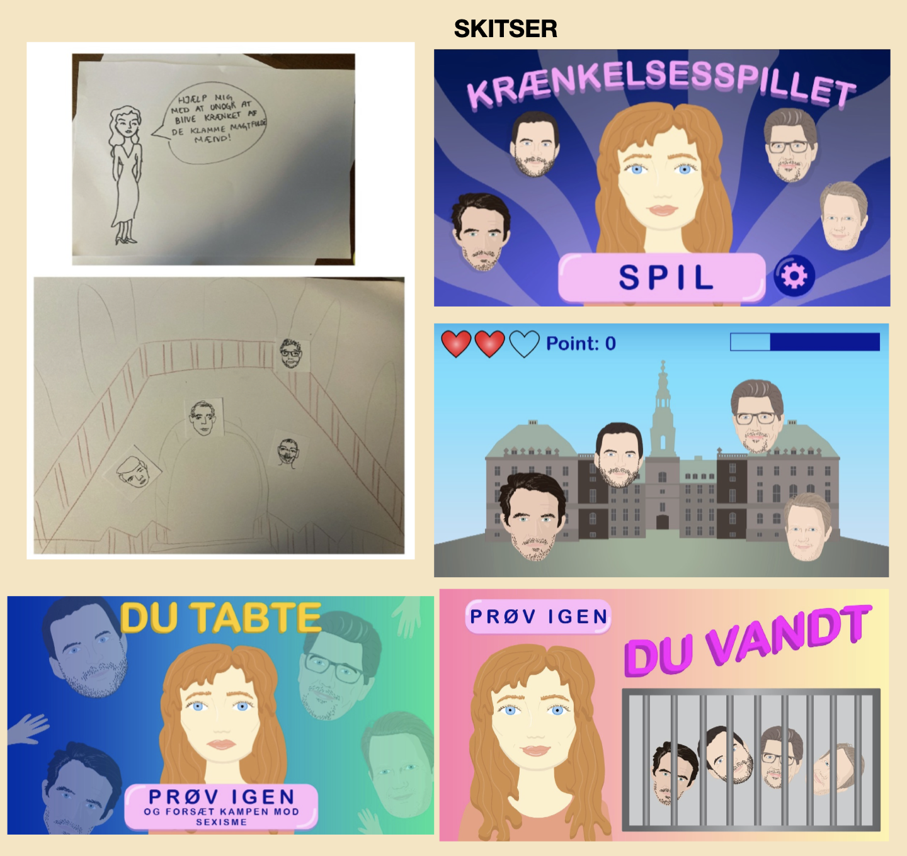

Du skal rentegne din baggrund, slutskærme og dine UI-elementer, og aflevere dem som en komplet assetliste. Du skal herefter færdiggøre din designdokumentation, så det lever op til kravene.
Jeg startede med, at skitse i hånden, for at få en ide om, hvordan spillet skulle bygges op. Derefter begyndte jeg, at tegne i Adobe Illustrator. Jeg vidste fra start, at spillet skulle tegnes rimelig realistisk, da det er vigtigt, at man kan se hvem tegningerne illustrerer. Jeg lavede ændringer undervejs, indtil jeg var helt tilfreds med udtrykket. Derfor er nogle af tegningerne i designdokumentationen og assetlisten ændret i selve spillet.
Introskærmen tegnede jeg til sidst, da jeg ventede til, at jeg var sikker på, at jeg havde tid til at kode det.
Jeg har lært hvad SVG-filer er, og at tegne et heltstøbt billede, ved hjælp af flere små tegninger. Jeg har også lært at lave UI-elementer, og at udarbejde et spil med tanker omkring farver, typografi, tegnestil og så videre.
Individuelt færdiggjort spil.
Til at starte med, lavede jeg en brainstorm med ideer til mit spil. Da jeg havde besluttet mig på Krænkelsesspillet, lavede jeg en hurtig papirprototype. Nu kunne jeg lave mit første aktivitetsdiagram. På dette tidspunkt havde jeg ikke et element, som gav et ekstra liv - det tilføjede jeg senere.
Herefter rentegnede jeg mine figurer, bag- og forgrunde, og ui-elementer. Da alle tegninger var færdige, skulle jeg lave mit statemachine-diagram. Til sidst skulle jeg kode spillet og færdiggøre det.
I dette forløb har jeg lært, at kombinere HTML og CSS med JavaScript. Jeg har lært, at sætte klasser på elementer gemmen JavaScript, og at få elementer til at reagere, når man klikker på dem. Jeg har også lært, hvad et aktivitets- og statemachine-diagram er, og hvordan man laver dem, og bruger dem i udarbejdelsen af koden. Derudover har jeg lært, at lave lydfiler gennem Adobe Audition.